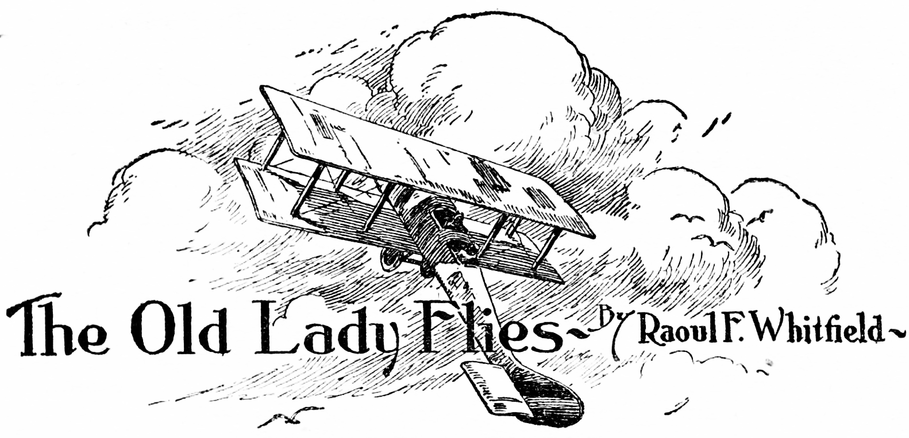

Russ Healy always insisted that the old girl understood. But Russ was that rare sort of creature—a flyer who was sentimental. Of course, on the face of things, it was sheer rot. A plane is an inanimate object, theoretically—and therefore incapable of understanding. But Russ didn’t look at it that way. There was no doubt about the fact that he loved the Jenny.
He’d picked her up right after the war, on a government sale. She hadn’t been flown at all, and Russ had worked with her ever since that time. He’d joy-hopped her, taken a chance on air advertising, smoke writing, stunting. He’d even done some air surveying with her, and I think he chased boll weevils, down South, at one time—spraying from the Jenny.
She’d cracked up with him more than once, but Russ would just patch her up—and patch himself up. She wasn’t a pretty sight. She was dirty—oil-stained, her wing fabric of varied colors, her struts lacking varnish. She sagged a bit on her under carriage. But her flying wires were right; she was rigged properly for the air. She was slow, of course—powered by an old Hall-Scott engine, and sluggish on the controls, compared to the new ships. Just an old lady, that was all she was—an old lady, still turning a prop and taking the air, but pretty far out of date.
We had eight ships in the circus, and five pilots. That is, we had five fliers who could do more than get off and land. A couple of the grease monkeys could qualify—indeed, had qualified—for a license, but that doesn’t make a flyer—not by about a thousand air hours and considerable natural ability. However, when we made the jump from the outskirts of one town to the outskirts of another, the two mechanics each flew a ship, and Bob Brooks, who ran the Brooks’ Flying Circus, flew the other. That got the eight ships around, and made a nice showing in the sky.
It was Bob Brooks’ wife who started the thing. She was a peach, and Bob was crazy about her. I didn’t blame him.
We ran into a streak of tough luck. Charlie Ryan crashed on a landing, and both he and his mechanic, riding in the rear cockpit, were badly smashed up. Then Duke Conroy got in a spin, out of a side-slip—and we had to leave him at the hospital pretty badly hurt.
It was then that Bob’s wife had her little say. It was, in effect, that her good-looking husband keep both feet on the ground.
We stayed around Los Angeles, picking up a few movie jobs, and looking at the mountains and the Pacific from the air until the boys came out of the hospital. We lost a little money.
Then Bob Brooks called us into the big tent we slung up on the field in which we were parking, and gave us a little talk. “I’m giving the air the air,” he said. “I never did do much but ferry. I’ve got too much brain.” He grinned, and so did we. “And now I’m not even ferrying. So we’ve got to cut down a bit. We’ll drop two ships. Vance Bailey has bought that Standard. Now, about the other——”
Brooks’ eyes went to those of Russ Healy, and we knew right away what was coming. It gave me a jolt, because I knew Russ—and I knew the way he felt. And I guess it gave the others a jolt, too.
“About the other,” Bob repeated uncomfortably, “I guess we’ll have to let the ‘Old Lady’ go, Russ.”
Well, there it was. Russ Healy blinked a couple of times. He’s tall and lean, with gray, squinted eyes—and usually there’s a tight little smile playing around his lips. But the smile wasn’t there now.
Healy shook his head slowly. Then he got a pill from the pack. “If you do,” he said very slowly. “I’ll just go along with her.”
Bob Brooks frowned. “You can have the new Waco, Russ. You can do anything with her. She’s got power, climb, dive. She’s an easy rider——”
“I’m sticking with the Old Lady,” Russ said quietly. “When do you want me to cut loose?”
I saw then that Brooks was getting sore. Russ Healy was a sweet stunt flyer; in fact, he was a good man all around when it came to air stuff. There wasn’t much that Russ couldn’t do, or hadn’t done.
“Look here!” Brooks said. “We can’t fly a ship around if there’s no one to climb inside and get at the stick. You don’t expect me to let a new plane drop—and hang on to a rambling wreck? Why, that Jenny is liable to fall to pieces in the first spin you get her into, and——”
Russ Healy’s eyes narrowed. “Think so?” He spoke grimly. “Well, I’ll just take her up there now—and loop you ragged, and then I’ll come down in the tightest spin——”
“Yes you will! Not with me!” Brooks’ face was flushed.
“That’s right,” Russ said grimly. “I forgot you were quitting the air.”
It was his tone that did it. And they had both flared, were both pretty hot.
Bob Brooks glared at Russ. “I’m not quitting the air until we hit Tia Juana,” the boss said slowly. “I’ll fly the Waco down. You can take that wreck of yours—and cut loose, any time you like. What do we owe you?”
Russ Healy smiled. “Not a cent,” he said. “I owe you fifty bucks—the final payment on that last wreck replacement material for the Old Lady. I’ll see that you get it by dark.”
Then he turned and walked away.
Bob Brooks looked at me, shook his head slowly. I was frowning.
The boys were talking together in low tones.
“Not so good, Bob!” I said. “You’re cutting loose the most popular guy in the outfit—and just because he sticks by his old bus.”
Brooks didn’t see it that way. He spoke to the rest of the gang: “We’re losing money. I can’t fly all the ships we’ve got. Why should I get rid of the new ones—just because I’m sentimental? This is a business—not a sob factory!”
There was common sense in that. We could see Brooks’ side of it. And the sky-riding game hadn’t been so good lately—something had to be done.
“I think a lot of Russ Healy,” Brooks went on, looking at each one of us in turn. “Even if he did hint that I was showing yellow by sticking on the ground—I like him. Some of you boys talk to him. He could store that ship up at Al Garvin’s hangar. Then every month or so I’ll give him a day off, and if he’s close enough he can come back and pet it.”
With that final sarcasm, Bob Brooks walked out of the tent. I chased after him, having just had an idea. They don’t come very often, but sometimes they’re good when they do come.
“Russ is sore, Bob,” I said, “and he owes you fifty bucks. He’s going to try to get that fifty. I happen to know that he hasn’t got it. And he’s going to try to show you up—show you that the Old Lady can still do her stuff. Now—how’s he going to do it?”
Bob frowned. “He isn’t! He’s just talking.”
“You know better than that,” I replied. “He isn’t that kind. I’ll tell you what he’s going to do—he’s going to tackle the ‘War Aces’ job!”
That got Bob. That job happened to be one which had been turned down by three flying outfits and a half dozen joy-hoppers who were going it alone. A fellow named Conant was directing a picture of war-flying days, and he wanted some crash stuff. He was willing to pay for it, and he didn’t expect the pilot to kill himself. But he wanted a crash—and some tight, low spins that wouldn’t be easy.
“Russ wouldn’t do that job,” Bob said. “He’s too wise for that.”
“But he’s sore,” I repeated. “It gives him a chance to show you what the Old Lady can do—in the air. And it gives him a chance to hand you the fifty and tell you——”
An exhaust roar cut me short. We both stared toward the dead-line. There was only one ship out of the canvas hangars, and it was the Old Lady, the Jenny.
I swore softly. “Stop him, Bob! Stall him off. He’s going to fly over to that field where they’re doing the airshoot on——”
“Come on!” yelled Brooks, and ran toward the ship. I followed. We dodged through the wash of the Old Lady’s prop; her engine was being tested with blocks under the wheels. We both climbed up on a wing as Russ Healy cut the throttle and eliminated most of the exhaust roar.
“Forget about that fifty, Russ.” Bob Brooks grinned. “We’ll call it square. Where are you going——”
Brooks stopped.
There was a faint smile playing about Healy’s lips; his eyes were narrowed.
“Get off that wing, Brooks!” Russ’ tone was hard. “I’m going to put the Old Lady through some stunts that you’ll pay coin to look at! And you’ll have your fifty, all right. This old girl has made plenty for you—she’ll make that fifty——”
“Forget it!” Bob said. “If you try to do picture stuff with this——”
“Get off that wing!” Russ shouted, his face white. He knew what was coming—what would have come. “Get off—or I’ll bounce you off. Take those blocks away, Bud!”
“Russ,” I yelled desperately, “Bob didn’t exactly mean that about the Old Lady. Cool down and——”
The ship rolled forward from the dead-line. I jumped off the trailing edge of the wing. The prop wash caught me and bowled me over a few times. Something battered against me. I sat up to find Bob Brooks sitting beside me. The Old Lady was climbing off the field—cross wind.
We got up and watched her climb. I thought, for a few seconds, that Russ might just take her up a few thousand and do some stunts. But he didn’t. He headed her northeast, and flew in a straight line. He didn’t even bother to get altitude.
I groaned. “He’s heading dead for that field in the hills—where they’re making ‘War Aces!’ He’ll kill himself, sure as——”
Bob Brooks swore softly. Then he smiled. “He owes me money on that plane! It’ll take time to get cameras set up. They may not be working today. Anyway, it’ll all take time. We’ll climb in the D.H. 6 and fly over. I’ll talk to Conant—he can’t use Russ——”
“He’ll hand you the fifty and tell you to clear out,” I interrupted. “And Russ’ll raise the devil if you try to cut in on him.”
Bob Brooks groaned. “They’ll say I rode him into being bumped off! He’ll get all smashed—we’ve got to do something!”
I nodded. “What?” I asked simply. And that was the question.
We wasted about five minutes talking the thing over. Al Rodgers and Dave Simmons joined us. Charlie Ryan and Duke Conroy came up. It was Conroy who hit on the idea.
“Russ is a good guy, boss,” he said. “He gets heated up easily—but he’s all right. I’m not going to stick over here and see him kill himself for the chance of showing you up, and getting fifty bucks. I know this fellow Conant. As long as he shoots the crash—he won’t care about Russ. When that fellow Donnelly, who made a living by pulling off crashes for the film gang, got his, did they do any prolonged weeping? They did not. Just business—and he’d signed a paper releasing them from any responsibility, of course. I won’t let Russ get hot-headed and bump himself off that way!”
“How,” I asked, “are you going to stop it?”
“Not me,” Conroy said. “Us! I could lick Russ if I hadn’t just come out of the hospital, maybe—but there would still be the movie gang. There’s only one thing to do. We’ll all fly over there—and raise merry——”
“Great!” I interrupted, and grabbed Bob Brooks by the arm. “But first let’s call the Mammoth Film Company—and make sure they’re working on air stuff today. They’ve been shooting some mild flying, even if they couldn’t get the crash stuff.”
Bob nodded excitedly. “Get the ships out! You call up, Mac. We’ll fly five ships over—I’ll ride with you, Mac. Hurry it up! They might just happen to be set for the stuff.”
There was a gas station about a half mile down the road which ran past the field, and I trotted toward it. The other boys were moving toward the hangars. I chuckled. Russ would be sore, furious—when we flew in and busted things up. And six of us could do it.
It was the only thing to do. I’d heard about Conant. He was an aggressive chap, and he knew his air. He’d flown during the war, and then he’d quit, which showed me that he had brains. It was his job now to get crash scenes for “War Aces”—and he was up against it. It isn’t easy to crash a ship, and get away cheerfully.
Donnelly had done it—for about three crashes, wing-overs and stalls. And then the engine had come back on his chest—and he was through.
“War Aces” was a thriller—I knew, because I’d read it. It wasn’t exactly highbrow, and it wouldn’t take much acting, but it would take some crashing, and some bang-up air stuff. If the movie bunch were working—and I had a hunch that they were—Conant would grab Russ and the Old Lady. And Russ was so sore that he’d forgotten all about himself. That was a cinch. He was like that.
It took me five minutes to get somebody at the picture outfit that knew about the shoot. And they gave me a straight answer. Conant had five cameras out at the field, in the hills back of Hollywood. He had two ships. He was shooting stuff. And the company was still looking for a thrill-man. Did I know of one?
I groaned and hung up. When I got back to the dead-line the ships were out, and being tested at the blocks. I gave Bob the cheerful news. He swore a couple of times.
“When we hit the field we’ll set our ship down,” he explained. “Look out for holes—they may have been doing some war-time shell-hole stuff. Mac and I will go after Russ—and hang on to him. You fellows get down as soon after us as you can, in case this fellow Conant gets rough with us for breaking up the party. I’ll do the talking. If things look tough, you ease up to the Old Lady—and break a connection, Duke.”
Duke Conroy grinned. “I’d rather talk with this Conant, but you’re the boss.”
“Well—let’s get up and over there!” Bob said. “I started this mess and I’ll finish it! And believe me, when I get Russ Healy back here——”
“I’ll feel a lot better!” I interrupted—and meant it.
Then we climbed the five ships, and taxied out. Sixty seconds later we were off the earth—and heading for the field from which they were shooting the “War Aces” stuff. As the D.H. climbed, and I held the joy-stick back a bit from the neutral position, I shook my head slowly. Knowing Russ Healy as well as I did, I could figure trouble ahead and below.
“Unless we wreck things generally,” I thought to myself, “the Old Lady flies!”
It wasn’t hard to spot the field on which they were making “War Aces”—or at least a part of it. It was a level stretch, between rolling hills. There were shell holes, home-made but real warlike, at one end. At the other end of the stretch there were three ships. Two of them were small, single-seaters. One, I guessed, was a baby Nieuport. Ed Seeley had one of those, but he wasn’t doing any crash stuff with it, I knew that.
As we circled over, I saw that they were working on the Old Lady. Probably they were rigging up a couple of dummy guns, or trying to make her look like a D.H. or a bomber of some type. It was hard to figure just what they could make the Old Lady look like—but they do queer things in the movies.
I cut the throttle, and glided down. Bob Brooks yelled at me above the whistling of wind through the flying wires: “We’ll be in time! They’re trying to camouflage the Old Lady!”
I nodded, and brought the D.H. down into the wind. We made a fair landing, and I taxied around and rolled back toward the three planes.
The crowd was watching me come up, and some of the bunch on the field were staring up at the other boys.
We rolled fairly close to the parked ships, and I cut the switch. Bob and I climbed down, and we were met at the wing tip by a scowling Russ Healy. Beside him was this fellow Conant, short and stocky—and dolled up as though he were going to play a round or two of championship golf.
Brooks grinned. “Hello, boys!” he greeted them. “Just paying you a little visit. Sort of a social call. How’s the picture coming along?”
Conant smiled. “It’ll be all right now,” he said cheerfully. “Healy’s going to do some crashes for us—and some warm air stuff. If we could work you boys in——” He stopped.
Bob Brooks was shaking his head slowly. “Russ isn’t going to do any crashes for you—not in the Old Lady! And you can’t work us in, Conant.”
Russ Healy swore softly.
Conant looked sort of amused.
There was a crowd of picture people around us by this time, but the other boys were setting their ships down on the field. I wasn’t worried much.
“If it’s a matter of money——” Conant said.
“It isn’t,” Brooks interrupted him. Then he grinned.
I could see that Brooks was trying to get out of it peaceably, if he could, and I had my doubts about that.
“You see,” Brooks continued, “we sort of like Russ around the outfit. Sometimes he has careless ideas, but he’s not doing any crashing for you—get that straight!”
Conant stiffened and smiled in a rather superior manner.
Just then Al Rodgers and Dave Simmons shoved their way to our side.
Bob Brooks grinned. “Did Duke go over to the Old Lady?” he asked Simmons.
Simmons nodded. “With his best pair of pliers,” he said cheerfully, and I saw Russ Healy straighten up and his face get hard.
Brooks nodded. “Russ,” he said slowly, “suppose you come along back with us. You can ride me back in the Old Lady. Maybe I was a little hasty about that ship. Maybe we can frame some way of taking her——”
“Not a chance!” Russ interrupted hotly. “You fellows clear off this field. If they don’t clear off, Conant——”
Conant nodded his head slowly.
I looked at the director, but I spoke to Bob Brooks. “I’ll take this little runt,” I told him. “And I won’t need that set of brass knuckles unless they get to piling on me too thick.”
Dave Simmons chuckled. Dave’s about the biggest pilot in captivity, and he likes a good, uneven scrap. “I’m glad we came over,” he said cheerfully. “Better shoot this stuff, Conant. It’ll make good war stuff.”
I could see, by that time, that Conant wasn’t a scrapper. He just smiled in a sort of apologetic way.
“If it’s any of your business,” he said, addressing Brooks, “perhaps it might be advisable to talk things over.”
Healy didn’t like that. He glared at Bob Brooks, and said: “I owe him fifty dollars, Conant. Give it to him, and take it off my stunt pay.”
I expected that.
So did Bob. He shook his head. “I’ll have to look up some papers,” he replied. “Don’t know the exact amount, and, anyway, Healy is under a contract to fly for me—not for himself. We’d have to——”
“I’ve busted the contract!” Russ Healy exclaimed. “I’ll fly any way that I want to fly. The Old Lady’s my ship. You say she’s no good. I’ll show you how good she is—and you’ll pay money to see her in the movies——”
“Steady!” Bob interrupted him. “Maybe we’d just better grab him, Mac—what do you think?”
I looked at Russ. He was pretty white around the ears, but he was still able to use his head.
“Better come along, Russ!” It was Simmons who spoke. “If you and your friends hop us, Duke’ll clip a few wires with his pliers, and you never will get the Old Lady off—not for a few days, anyway.”
Healy glared at Simmons. Then he looked at the director. Conant was smiling cheerfully. There was a peculiar expression in Russ Healy’s eyes suddenly. He shrugged his shoulders.
“All right,” he said. “But I’ll be back in a few days, Conant—just as soon as I work out fifty bucks’ worth of air stuff for the old miser, here.”
Conant nodded. “We’ll shoot some other scenes in the meantime,” he replied, and kept right on smiling. “Don’t get hurt, Healy.”
I laughed out loud at that one. Conant telling Russ not to get hurt! It was pretty rich.
“I’ll ride back with Russ, Mac,” the boss told me. “You boys stay down here until we take off.”
I nodded and lighted a pill.
Russ followed Bob Brooks along toward the Old Lady.
Conant shrugged his shoulders. “Just one delay after another,” he declared. “It’s beastly!”
“Sure it is,” I agreed. “Times are getting tough when you can’t get fellows to kill themselves by crashing planes for a few hundred dollars.”
But Conant didn’t get sore. He kept right on smiling. And remembering that expression I’d seen in Russ Healy’s eyes, I figured that something was up. I tried to dope out just what it would be, as I walked over toward the D. H., but it had me buffaloed.
The Old Lady’s appearance sidetracked me. They hadn’t had much time, but already they’d mounted two guns on the old Jenny, and there was camouflage paint on her—not yet dry. There wasn’t very much of it, but enough to make her look like a different ship. She’d do for a crash, anyway.
Russ was climbing into the front cockpit, and as he squirmed into place back of the stick, he looked at me. He was grinning. Bob Brooks was already seated in the rear cockpit.
I waved a hand and went on toward the D.H. The other boys were already in their planes, or moving toward them.
I hadn’t more than snapped the self-starter and let the prop turn over a few times, when the Old Lady, gaudy in her new disguise, took the air. I stared at her. The dummy guns were still in place. I wondered why Bob hadn’t raised the devil about that, but I figured he was glad enough to get Russ away so easily.
“He’ll have to do some talking to keep Russ from coming back!” I thought, as I advanced the throttle a few notches and taxied out into the wind. “Something’s funny in this deal. I’m sure of that!”
I’d heard a lot about this fellow Conant, and I knew a lot about Russ Healy. Neither of them, from the way I figured it, had run true to form. They’d let us set the ships down there, and deliberately bust up their little party.
They’d taken it pretty calmly, too. Then, there had been that exchange of glances between Conant and Russ Healy. That had counted for something. As I lifted the De Haviland off the field, following the Old Lady, I shook my head. “Something’s up—besides some joy-hopping ships!” I said to myself. “But what?”
The answer came when I got up to four thousand feet, and it came so suddenly that I almost let the D.H. slip into a tail-spin. We’d been climbing in a wide circle—the five ships—following the Old Lady. And I guess we’d all been getting a kick out of those two dummy guns and the slapped-on war paint.
All of a sudden the Old Lady stood right up on her tail in a sweet zoom—and laid over on her back! Then she came down in a pretty fair loop!
I had the D.H. out of her way, banking off vertically. As I came around, in a position to get a good look at things, I saw plenty.
There were about a dozen ships in the air. At least four of them were stunting—looping, doing wing-overs, Immelmanns, and spins! From two of them came sulphurous trails of yellow, streaming off at an angle. They had guns—and were shooting them!
The Old Lady was going down in a spin, and two planes were following her down, both streaming out yellow trails from their exhausts and spitting red from guns shooting between the synchronized propeller blades! Diving near by was a fourth ship, with a bird standing in the rear cockpit—and turning a crank in a boxlike affair!
Then I got it. Conant and Russ Healy had framed us! They were shooting from the air and from the ground—shooting stuff for the picture! And they were using our five ships!
A screaming, wire-whistling shape dove past the D.H. on the right, and instinctively I banked away. But even as I did so, I got a glimpse of a helmeted figure using a camera. He wasn’t cranking it—but I guessed that he had one of the new, electrically driven ones that didn’t need it.
I had the D.H. in a spin. Bob Brooks, riding with Russ, being let in for all this frame-up! And the Old Lady doing all of her stuff! No wonder Russ had exchanged glances with Conant!
At three thousand feet I got the D.H. out of the spin, leveled off, and gave her the gun.
There were white bursts in the air, and on the ground below there were more of them. I banked over, looking for the Old Lady. I saw one of the circus ships going down in a steep glide, with a strange plane on her tail. A ship was looping a few thousand feet above me, white bursts on her right. Smoke was drifting all across the sky.
Then I spotted the Old Lady. She was going down toward the field, at the shell-ripped end, with one of the Nieuports I’d seen right behind her. I caught sight of two camera men, shooting up at her as she came down.
I dove the D.H. I was too surprised and too excited to get sore. Anyway, it wouldn’t have done any good. The whole thing was plain now. I’d always given Russ credit for having brains, but I’d never given him credit for having this much.
They’d had ships waiting on some other field of course, and Russ had guessed that we’d come after him. When Bob Brooks had said he’d fly back with Russ he’d played right into that pilot’s hands. Two birds with one stone! Not only would Brooks sit in on the sky shoot, but he’d be right there for the crash—the big scene that Conant wanted!
I groaned. The D.H. was down pretty low now. I could see a ship diving off to the side of the Old Lady, and in the center of the shell-holed area were two more camera men, waiting to shoot the crash from the ground.
The Old Lady was slipping off on a wing now, and I knew that Russ was trying to hit the spot near the camera men. There was the fellow grinding away from the plane at one side, too—still shooting the fake battle.
I thought of Bob Brooks in the rear cockpit. He was helpless—it wasn’t a dual-control ship. Russ had put the Old Lady through every air stunt—and Bob had had to sit there and take it. Now he was in for the crash!
It was a beauty! The Old Lady nosed right into what looked like a fairly deep shell hole. Her propeller splintered, her tail came up. I could hear her wings crackling, with the engine throttled down. Then she tumbled over, upside down—and I groaned and dove the D.H. for a landing.
“The old fool!” I said, and wasn’t at all sure that I really meant it.
When I got up beside the Old Lady, Russ Healy was leaning against a wheel and smoking a cigarette. Bob Brooks was limping around, trying out his left leg, and muttering to himself. Conant was standing near by, and scribbling on a piece of oblong paper with a fountain pen.
“Hello there, rough boy!” Russ greeted me cheerfully. His head was bandaged, and a medical-appearing gentleman was putting more white stuff around his left wrist and hand. “Can the Old Lady fly?”
I grunted. She wasn’t as complete a wreck as I’d expected to see, and there was a reason. The shell hole was filled with nice, soft sand!
“She could fly!” I replied.
Bob Brooks limped over my way. “They put one over on us, Mac!” he said. “They shot all sorts of stuff. They used our planes, their planes—and then even used me!”
I couldn’t help but grin.
Then the red-faced, golf-togged Conant came over and waved a check toward Bob. “This should help,” the director said. “We had to have your planes. Can’t use all of it, of course. You weren’t rigged with guns and stuff. But it’ll help—in the flashes. Is it all right?”
Bob took the check, and I looked over his shoulder. We both gasped together. As a check it was a masterpiece.
“It’s—all right!” Bob managed to say.
Conant chuckled. “Had to have the stuff!” he said. “Needed our ships—all I could scrape together—for the cameras. Most of them, anyway. Of course, I’ll take care of Healy——”
Russ grinned. Then his face sobered. He glared at Bob Brooks.
“How about it?” he asked. “Can the Old Lady fly? Does she get fixed up—and do I sky-ride her with the outfit?”
Bob Brooks looked up at the sky, and I could see that he was thinking back about four and a half minutes—to those stunts. He looked down at Russ Healy again, and nodded his head.
“The Old Lady flies!” he said slowly, and that settled it.